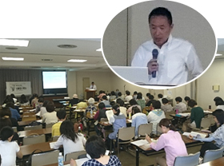

第53回埼玉県消費者大会実行委員会
5月23日(火)10時30分より、さいたま市民会館うらわ705・706集会室にて、岩岡宏保さん(全国消団連共同代表、埼玉消団連代表幹事)を講師に、｢いま、あらためて学ぶ消費者の権利｣をテーマに第1回プレ学習会を開催し、56人が参加しました。

第53回埼玉県消費者大会は24団体による実行委員会を結成し、学習と話し合いを続けています。講師の岩岡さんから、消費者保護から消費者の権利への法制度と消費者問題の変遷について、個別の消費者問題の事例を交え、消費者問題の全般にわたってのお話をいただきました。現状の消費者問題として食品安全・食品表示や電力自由化、都市ガス・LPガス、個人情報等の実際に寄せられている相談事例もおりまぜながら、消費者市民社会づくりのためには平和が前提となると締めくくりました。
※感想(抜粋)
- ケネディ大統領により4つの権利などが考えられていたことに驚きました。
- 日常生活の中であまり話題にならないテーマでしたので勉強になりました。自分自身、消費者の立場として行動しなくてはと思いました。
- 講演内容が豊富で知りたいテーマで興味深く聴講しました。
- 消費者の権利が、要求のなかで実現してきたことが判りました。高齢者の被害が増えていることをどのように防げばいいのかと思いました。
- 具体的な事例をもっとたくさん聞きたかったです。
- 知ることが大切だと思いました。LPガスのお話がわかりやすく、ショックでした。
- 世界を変えるための17の目標というのは初めて目にしました。
- 広い範囲でのお話だったので焦点を絞りじっくり学ぶ機会があればと思いました。
- 年代別に状況や事件などがまとめられているのはわかりやすく面白かった。
- くらしの会の成り立ちなどわかり勉強になりました。
- 加工食品の原料原産地表示のお話が一番興味深かったです。｢大括り表示｣を初めて知り勉強になりました。
|